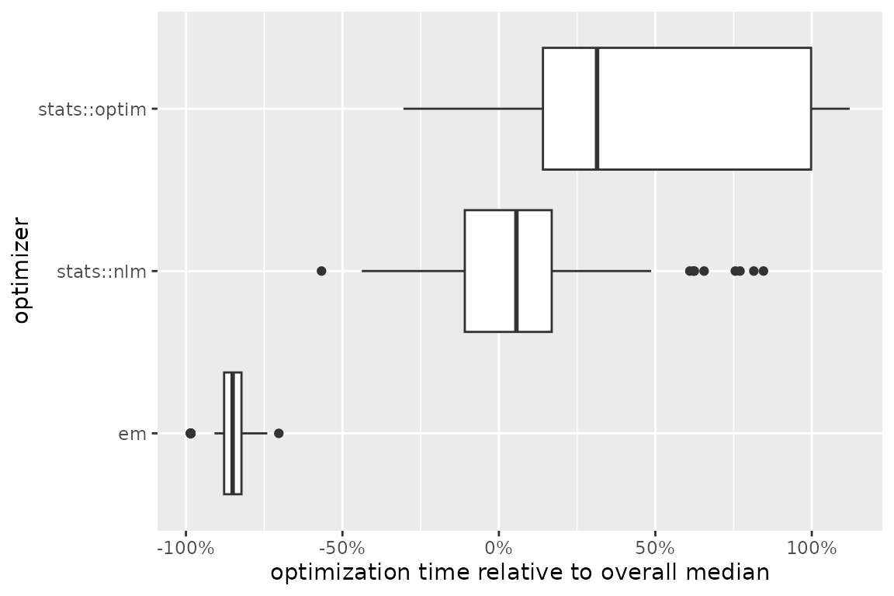

Motivation
Optimization aims to maximize effectiveness, efficiency, or functionality in various fields. Examples include portfolio selection in finance, minimizing air resistance in engineering, or likelihood maximization in statistical modeling. The common goal is to find inputs that produce an optimal output.
In some scenarios, determining optimality is feasible by analytical means, for example with simple objective functions like . The first derivative vanishes at , and since is strictly concave, we conclude that is the unique point where is maximal. However, many optimization problems lack closed-form solutions, requiring numerical optimization.
Numerical optimization encompasses algorithms that iteratively explore the parameter space, seeking improvement in the function output with each iteration and ultimately converging to a point where further improvements are not possible (Bonnans et al. 2006). R offers various implementations of such algorithms1. Common to all these algorithms is the necessity to specify initial parameter values.
Crucially, initialization can strongly influence optimization time and outcomes (Nocedal and Wright 2006). Starting in non-concave areas risks convergence issues or settling on local optima instead of the global optimum, while starting in flat regions can slow computation, which is especially critical when function evaluations are costly. This raises two key questions:
Does initialization affect my optimization problem?
If so, what initial values ensure fast optimization leading to the global optimum?
Package functionality
We introduce ino, short for initialization of numerical optimization, designed to address the aforementioned questions:
Investigation into the impact of initial values on optimization.
Comparison of various initialization strategies.
Comparison of different numerical optimizers.
Following an object-oriented approach2, the package treats numerical optimization problems as objects. These objects are defined by a real-valued function, its target arguments, and one or more optimization algorithms. The object provides methods for selecting initial values, executing numerical minimization or maximization, and evaluating the optimization results.
The key advantages of using the ino package include:
Straightforward comparisons among optimizers and initialization strategies.
Compatibility with any optimizer implemented in R for both minimization and maximization tasks through the optimizeR framework (Oelschläger and Ötting 2025), detailed below.
Support for parallel computation through the future package (Bengtsson 2021) and progress updates via the progressr package (Bengtsson 2024).
Example workflow
To begin, obtain ino from CRAN via:
install.packages("ino")
library("ino")Gaussian mixture model
In this example, the function to be optimized is a likelihood function, computing the probability of observing given data under a specified model assumption. The parameters that maximize this likelihood function are identified as the model estimates. This method, known as maximum likelihood estimation, is widely used in statistics for fitting models to empirical data.
We examine eruption times of the Old Faithful geyser in Yellowstone National Park, Wyoming, USA. The data histogram suggests two clusters with short and long eruption times, respectively:
library("ggplot2")
ggplot(faithful, aes(x = eruptions)) +
geom_histogram(aes(y = after_stat(density)), bins = 30) +
xlab("eruption time (min)") For both clusters, we assume a normal distribution, representing a mixture of two Gaussian densities to model the overall eruption times. The log-likelihood function3 is defined as:
Here, the sum covers all observations , and represent the normal density for the first and second cluster, respectively, and is the mixing proportion.
Our objective is to find values for the parameter vector that maximize . Due to the complexity of the problem, analytical solutions are not available, therefore numerical optimization is required.
Remark: Numerical optimization in this example is fast due to the relatively small dataset and a model with only two classes. While initialization might seem less critical in this scenario, it becomes a more significant concern as the problem scales with more data and parameters (Shireman, Steinley, and Brusco 2017). Furthermore, even this seemingly simple optimization problem is susceptible to local optima, depending on the chosen initial values, as we will see below.
The following function computes the log-likelihood value
given the parameters mu, sigma, and
lambda and the observation vector data:
normal_mixture_llk <- function(mu, sigma, lambda, data) {
sigma <- exp(sigma)
lambda <- plogis(lambda)
sum(log(lambda * dnorm(data, mu[1], sigma[1]) + (1 - lambda) * dnorm(data, mu[2], sigma[2])))
}
normal_mixture_llk(mu = 1:2, sigma = 3:4, lambda = 5, data = faithful$eruptions)
#> [1] -1069.623Remark: To ensure positivity for the standard deviations
sigma, we apply the exponential transformation. Similarly, to constrainlambdabetween and , we use the logit transformation. This approach allows us to optimize over the value space without the need for box-constrained optimizers.
Initialization effect
Does the choice of initial values have an influence for this optimization problem? In the following, we will use the ino package to optimize the likelihood function, starting from 100 random initial points, and compare the results.
We start be defining the optimization problem:4
Nop_mixture <- Nop$new(
f = normal_mixture_llk, # the objective function
target = c("mu", "sigma", "lambda"), # names of target arguments
npar = c(2, 2, 1), # lengths of target arguments
data = faithful$eruptions # values for fixed arguments
)The call Nop$new() creates a Nop object
that defines a numerical optimization problem. We have saved this object
with the name Nop_mixture. In the future, we can interact
with this object by invoking its methods using the syntax
Nop_mixture$<method name>() or its fields via
Nop_mixture$<field name>.
The arguments for creating Nop_mixture are:
-
f: the objective function to be optimized. -
target: the names of the target arguments over whichobjectiveis optimized. -
npar: the length of each of these target arguments. - The argument
datais provided, which remains constant during optimization.
Additionally, analytical gradient and Hessian function for
f can be provided if available.
Once the Nop object is defined, the objective function
can be evaluated at a specific value at for the collapsed
target arguments:
Nop_mixture$evaluate(at = 1:5) # same values as above
#> [1] -1069.623Next, we require a numerical optimizer. Here, we choose
stats::nlm():
nlm <- optimizeR::Optimizer$new(which = "stats::nlm")
Nop_mixture$set_optimizer(nlm)Once an optimizer is specified, the process of optimizing the function becomes straightforward:
- Define initial values using one of the
$initialize_*()methods (detailed below). - Call
$optimize().
set.seed(1)
Nop_mixture$
initialize_random(runs = 20)$
optimize(which_direction = "max", optimization_label = "random")The method $initialize_random(runs = 20) generates 20
sets of random initial values, with each set independently drawn from a
standard normal distribution by default. Subsequently,
$optimize(which_direction = "max") maximizes the function,
starting from these generated values. Setting an
optimization_label is optional but can be useful if
different initialization strategies are compared.
The optimization results can be accessed through the
$results field:
Nop_mixture$results
#> # A tibble: 20 × 13
#> value parameter seconds initial error gradient code iterations error_message
#> * <dbl> <list> <dbl> <list> <lgl> <list> <int> <int> <chr>
#> 1 -421. <dbl [5]> 0.0970 <dbl> FALSE <dbl> 1 36 NA
#> 2 -276. <dbl [5]> 0.115 <dbl> FALSE <dbl> 1 71 NA
#> 3 -421. <dbl [5]> 0.0713 <dbl> FALSE <dbl> 1 43 NA
#> 4 -276. <dbl [5]> 0.0402 <dbl> FALSE <dbl> 1 25 NA
#> 5 -421. <dbl [5]> 0.0734 <dbl> FALSE <dbl> 1 48 NA
#> 6 -421. <dbl [5]> 0.0918 <dbl> FALSE <dbl> 1 47 NA
#> 7 -421. <dbl [5]> 0.0579 <dbl> FALSE <dbl> 1 38 NA
#> 8 -276. <dbl [5]> 0.0522 <dbl> FALSE <dbl> 1 29 NA
#> 9 -276. <dbl [5]> 0.0445 <dbl> FALSE <dbl> 1 28 NA
#> 10 -421. <dbl [5]> 0.0618 <dbl> FALSE <dbl> 1 39 NA
#> 11 -421. <dbl [5]> 0.0701 <dbl> FALSE <dbl> 1 45 NA
#> 12 -276. <dbl [5]> 0.0497 <dbl> FALSE <dbl> 1 31 NA
#> 13 -276. <dbl [5]> 0.0450 <dbl> FALSE <dbl> 1 28 NA
#> 14 -421. <dbl [5]> 0.0681 <dbl> FALSE <dbl> 1 43 NA
#> 15 -421. <dbl [5]> 0.0613 <dbl> FALSE <dbl> 1 40 NA
#> 16 -421. <dbl [5]> 0.0631 <dbl> FALSE <dbl> 1 41 NA
#> 17 -421. <dbl [5]> 0.0629 <dbl> FALSE <dbl> 1 42 NA
#> 18 -276. <dbl [5]> 0.0843 <dbl> FALSE <dbl> 1 49 NA
#> 19 -276. <dbl [5]> 0.0605 <dbl> FALSE <dbl> 1 40 NA
#> 20 -421. <dbl [5]> 0.0659 <dbl> FALSE <dbl> 1 43 NA
#> # ℹ 4 more variables: .optimization_label <chr>, .optimizer_label <chr>,
#> # .direction <chr>, .original <lgl>In this tibble,
valueandparameterare the optimization results,secondsthe elapsed optimization time in seconds,initialthe used initial values,erroranderror_messageprovide information whether an error occurred,gradient,code, anditerationsare information provided by the optimizer,.optimization_label,.optimizer_label,.direction, and.originalidentify optimization runs.
For a quick overview, the $optima() method provides a
frequency table of the function values obtained at optimizer
convergence. You can choose to ignore decimal places using
digits = 0:
Nop_mixture$optima(which_direction = "max", digits = 0)
#> # A tibble: 2 × 2
#> value n
#> * <dbl> <int>
#> 1 -421 12
#> 2 -276 8The impact of initial values on the outcome is apparent. Now, we might question the implications of the two maxima, and , for our Gaussian mixture model fit to the Geyser data.
global <- Nop_mixture$maximum$parameter
library("dplyr")
local <- Nop_mixture$results |>
slice_min(abs(value - (-421)), n = 1) |>
pull(parameter) |>
unlist() Two parameter vectors are stored as objects global
(presumably the global maximum) and local (a local
maximum). To interpret the parameter estimates in terms of mean,
standard deviation, and mixing proportion, i.e., in the form
,
back-transformation to the restricted parameter space
is necessary (as mentioned above):
transform <- function(theta) c(theta[1:2], exp(theta[3:4]), plogis(theta[5]))
(global <- transform(global))
#> [1] 4.2733434 2.0186078 0.4370631 0.2356218 0.6515954
(local <- transform(local))
#> [1] 3.4877815 0.7821391 1.1392698 0.1367844 1.0000000The estimates global and local for
correspond to the following mixture densities:
mixture_density <- function (data, mu, sigma, lambda) {
lambda * dnorm(data, mu[1], sigma[1]) + (1 - lambda) * dnorm(data, mu[2], sigma[2])
}
ggplot(faithful, aes(x = eruptions)) +
geom_histogram(aes(y = after_stat(density)), bins = 30) +
labs(x = "eruption time (min)", colour = "parameter") +
stat_function(
fun = function(x) {
mixture_density(x, mu = global[1:2], sigma = global[3:4], lambda = global[5])
}, aes(color = "global"), linewidth = 1
) +
stat_function(
fun = function(x) {
mixture_density(x, mu = local[1:2], sigma = local[3:4], lambda = local[5])
}, aes(color = "local"), linewidth = 1
)
It is evident that the mixture defined by the global
parameter fits much better than the local, which
essentially estimates only a single class.
Comparing initialization strategies
Different initial values significantly impact the results of numerical likelihood optimization for the mixture model, as demonstrated so far. This prompts the question of how to optimally choose initial values. The ino package offers various initialization methods that can be easily compared:
| Method | Purpose |
|---|---|
$initialize_fixed() |
Fixed initial values, for example at the origin or educated guesses. |
$initialize_random() |
Random initial values drawn from a custom distribution. |
$initialize_grid() |
Initial values as grid points, optionally randomly shuffled. |
$initialize_continue() |
Initial values from previous optimization runs on a simplified problem. |
$initialize_custom() |
Initial values based on a custom initialization strategy. |
To modify initial values, the following methods are available:
| Method | Purpose |
|---|---|
$initialize_filter() |
Filters initial values based on conditions. |
$initialize_promising() |
Selects a proportion of promising initial values. |
$initialize_transform() |
Transforms the initial values. |
$initialize_reset() |
Deletes all specified initial values. |
We previously applied the $initialize_random() method.
Next, we will compare it to $initialize_grid() in
combination with $initialize_promising(). Here, we make
“educated guesses” about starting values that are likely close to the
global optimum. Based on the histogram above, the means of the two
normal distributions may be around
and
.
We will use sets of starting values where the means are both around
and
,
respectively. For the variances, we set the starting values close to
(note that we use the log-transformation here since we restrict the
standard deviations to be positive by using the exponential function in
the likelihood). The starting value for the mixing proportion shall be
around
.
We use three grid points in each dimension, which we shuffle via the
jitter = TRUE argument. This results in a grid of
starting values:
Nop_mixture$initialize_grid(
lower = c(1.5, 3.5, log(0.5), log(0.5), qlogis(0.4)), # lower bounds for the grid
upper = c(2.5, 4.5, log(1.5), log(1.5), qlogis(0.6)), # upper bounds for the grid
breaks = c(3, 3, 3, 3, 3), # breaks for the grid in each dimension
jitter = TRUE # random shuffle of the grid points
)Out of the 243 grid starting values, we select a 10% proportion of locations where the objective gradient is steepest and initiate optimization from those points:
Nop_mixture$
initialize_promising(proportion = 0.1, condition = "gradient_large")$
optimize(which_direction = "max", optimization_label = "promising_grid")It is evident that the initial values from the initialization strategy concerning the steepest gradient more reliably lead to convergence to the global maximum of compared to random initial values:
Nop_mixture$optima(which_direction = "max", group_by = "optimization", digits = 0)
#> $promising_grid
#> # A tibble: 1 × 2
#> value n
#> <dbl> <int>
#> 1 -276 25
#>
#> $random
#> # A tibble: 2 × 2
#> value n
#> <dbl> <int>
#> 1 -421 12
#> 2 -276 8
#>
#> attr(,"class")
#> [1] "Nop_optima" "group_by" "list"Comparing optimizer functions
So far, we only utilized the stats::nlm optimizer,
employing a Newton-type algorithm. Now, we compare its results and
optimization time to:
stats::optim, an alternative R optimizer that, by default, applies the Nelder-Mead algorithm (Nelder and Mead 1965), andThe expectation-maximization algorithm
em_optimizer, an alternative optimization method for mixture models, which we define in the appendix below.
We will incorporate these two optimizers into our
Nop_mixture object using the optimizeR
framework (here, em_optimizer already is an optimizer in
the required framework):
optim <- optimizeR::Optimizer$new(which = "stats::optim")
Nop_mixture$
set_optimizer(optim)$
set_optimizer(em_optimizer)Next, we initialize at 100 random points and optimize the mixture likelihood with each of the three optimizers from these points:
Nop_mixture$
initialize_random(runs = 100)$
optimize(which_direction = "max", optimization_label = "optimizer_comparison")The autoplot() method offers a visual comparison of the
(relative) optimization times:
Nop_mixture$results |>
filter(.optimization_label == "optimizer_comparison") |>
autoplot(which_element = "seconds", group_by = "optimizer", relative = TRUE) +
scale_x_continuous(labels = scales::percent_format()) +
labs(
"x" = "optimization time relative to overall median",
"y" = "optimizer"
)
Among the three optimizers, the expectation-maximization algorithm is
evidently the fastest in this case. Moreover, it most frequently
converges to the value
,
while stats::optim tends to converge to various local
optima. However, the expectation-maximization algorithm also encountered
failures in a couple of runs:
Nop_mixture$optima(which_direction = "max", group_by = "optimizer", digits = 0)
#> $em
#> # A tibble: 3 × 2
#> value n
#> <dbl> <int>
#> 1 -276 83
#> 2 -421 13
#> 3 NA 4
#>
#> $`stats::nlm`
#> # A tibble: 2 × 2
#> value n
#> <dbl> <int>
#> 1 -421 92
#> 2 -276 53
#>
#> $`stats::optim`
#> # A tibble: 24 × 2
#> value n
#> <dbl> <int>
#> 1 -421 65
#> 2 -276 8
#> 3 -278 3
#> 4 -277 3
#> 5 -293 2
#> 6 -453 1
#> 7 -417 1
#> 8 -416 1
#> 9 -415 1
#> 10 -403 1
#> # ℹ 14 more rows
#>
#> attr(,"class")
#> [1] "Nop_optima" "group_by" "list"Appendix
Verbose mode
The ino package features a verbose mode, which prints
status messages and information during its usage. This mode is primarily
designed for new package users to provide feedback and hints about their
interactions with the package. Enabling or disabling the verbose mode
can be achieved by setting the $verbose field of a
Nop object to either TRUE or
FALSE. For example:
Nop_mixture$verbose <- TRUEThe expectation-maximization algorithm
The likelihood function of the mixture model cannot be maximized analytically. However, if we knew the class membership of each observation, the optimization problem would collapse to the independent maximum likelihood estimation of two Gaussian distributions, which can be solved analytically. This insight motivates the expectation-maximization (EM) algorithm (Dempster, Laird, and Rubin 1977), which iterates through the following steps:
- Initialize and compute .
- Calculate the posterior probabilities for each observation’s class membership, conditional on .
- Calculate the maximum likelihood estimate conditional on the posterior probabilities from step 2.
- Evaluate
and either stop if the likelihood improvement
is smaller than some threshold
epsilonor if some iteration limititerlimis reached. Otherwise, return to step 2.
The following function implements this algorithm:
em <- function(f, theta, ..., epsilon = 1e-08, iterlim = 1000, data) {
llk <- f(theta, ...)
mu <- theta[1:2]
sigma <- exp(theta[3:4])
lambda <- plogis(theta[5])
for (i in 1:iterlim) {
class_1 <- lambda * dnorm(data, mu[1], sigma[1])
class_2 <- (1 - lambda) * dnorm(data, mu[2], sigma[2])
posterior <- class_1 / (class_1 + class_2)
lambda <- mean(posterior)
mu[1] <- mean(posterior * data) / lambda
mu[2] <- (mean(data) - lambda * mu[1]) / (1 - lambda)
sigma[1] <- sqrt(mean(posterior * (data - mu[1])^2) / lambda)
sigma[2] <- sqrt(mean((1 - posterior) * (data - mu[2])^2) / (1 - lambda))
llk_old <- llk
theta <- c(mu, log(sigma), qlogis(lambda))
llk <- f(theta, ...)
if (is.na(llk)) stop("em failed")
if (abs(llk - llk_old) < epsilon) break
}
list("llk" = llk, "estimate" = theta, "iterations" = i)
}Defining optimizers via the {optimizeR} framework
Previously, we integrated the stats::nlm and
stats::optim optimizers into the optimizeR
framework using:
nlm <- optimizeR::Optimizer$new(which = "stats::nlm")
optim <- optimizeR::Optimizer$new(which = "stats::optim")Employing the optimizeR framework is crucial for the ino package to maintain consistently named inputs and outputs across different optimizers for interpretation purposes (which is generally not the case).
The optimizeR package provides a dictionary of
optimizers that can be directly selected via the which
argument. For an overview of available optimizers, you can use:
optimizeR::optimizer_dictionary
#> <Dictionary> optimization algorithms
#> Keys:
#> - lbfgsb3c::lbfgsb3c
#> - lbfgsb3c::lbfgsb3
#> - lbfgsb3c::lbfgsb3f
#> - lbfgsb3c::lbfgsb3x
#> - stats::nlm
#> - stats::nlminb
#> - stats::optim
#> - ucminf::ucminfHowever, any optimizer not contained in the dictionary can be
incorporated into the optimizeR framework by setting
which = "custom" first:
em_optimizer <- optimizeR::Optimizer$new(which = "custom")… and then using the definition() method:
em_optimizer$definition(
algorithm = em,
arg_objective = "f",
arg_initial = "theta",
out_value = "llk",
out_parameter = "estimate",
direction = "max"
)For the expectation-maximization algorithm, an additional argument
data needs to be defined:
em_optimizer$set_arguments("data" = faithful$eruptions)For more details on the optimizeR package, please refer to the package homepage.